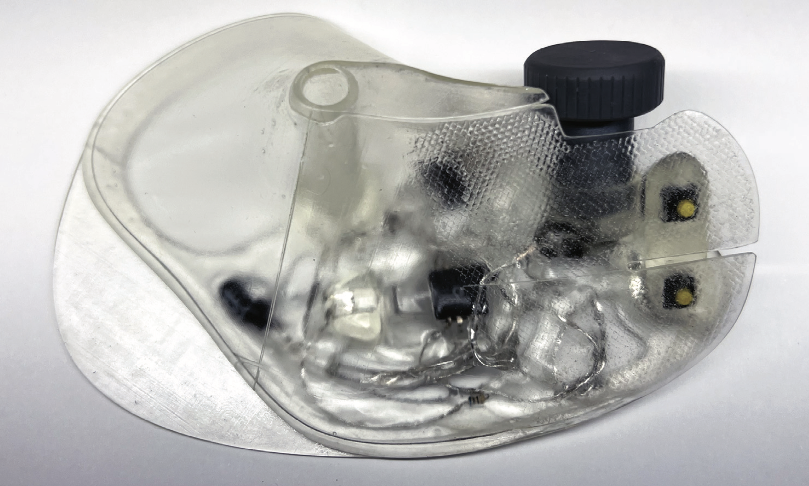
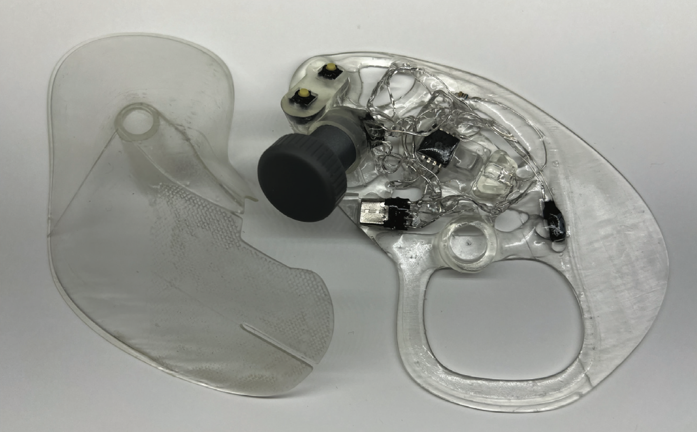
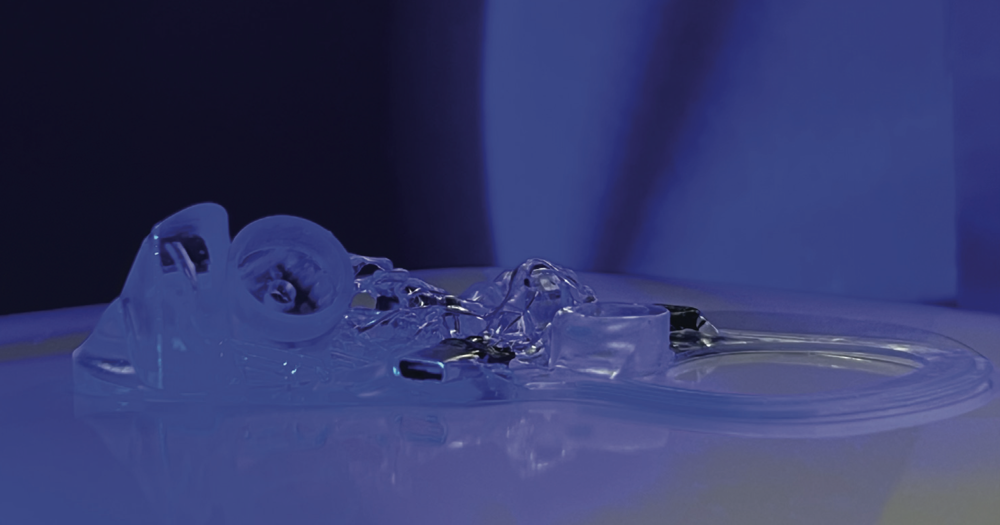
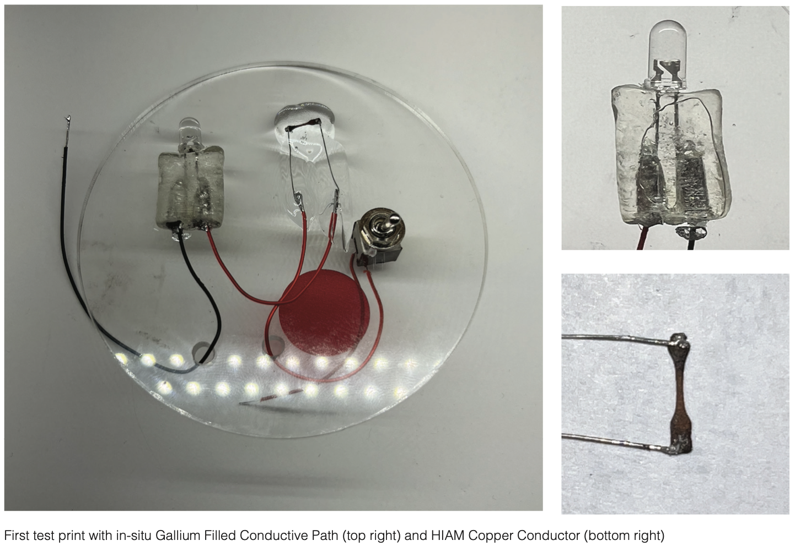
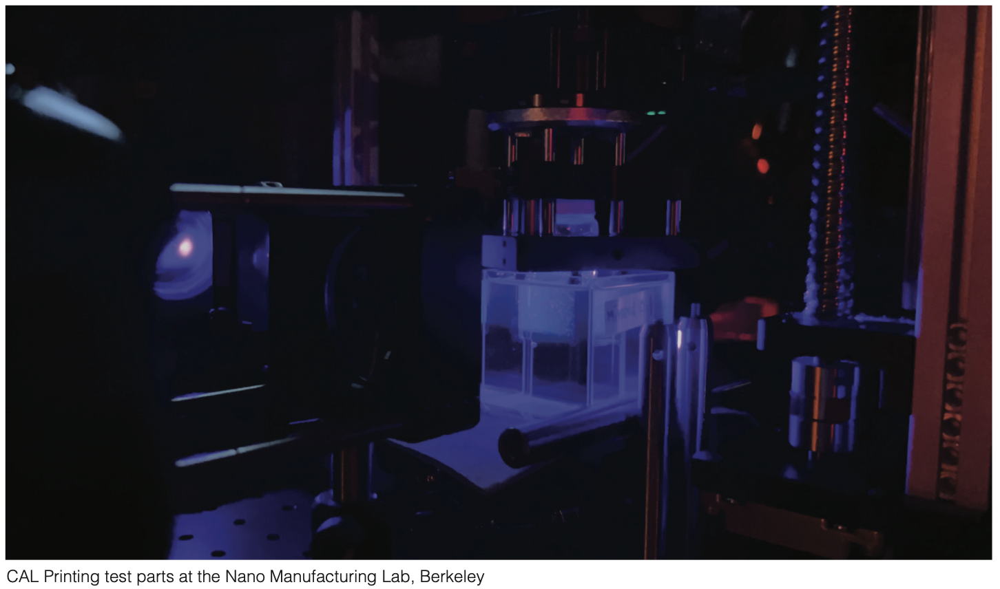

How We May Make | Master's Thesis
A Vision for Producing Sustainable Hardware





How We May Make
Master of Design Thesis | UC Berkeley
I set out to reimagine the design and production of consumer hardware to ensure resilience against climate change and supply chain disruptions. Moving away from high-emission global manufacturing, my research proposes a shift toward decentralized, super-local nano-factories where devices are fabricated on-demand.
Additive manufacturing has advanced to a point where we can now individually print polymers, metals, and ceramics, essentially all the core ingredients required to build hardware. This sparked a guiding question: What if we could produce functional devices in a single-shot 3D print, eliminating the need for multi-part mass production and complex downstream assembly?
To test this vision, I needed a fabrication method capable of bypassing traditional layered printing constraints. Working closely with UC Berkeley’s Nano Manufacturing Lab, I explored Volumetric Additive Manufacturing, specifically Computed Axial Lithography to successfully embed conductive materials and electronics directly into components as they were printed.
To demonstrate this workflow, I developed "Model A", a fully 3D-printed, ergonomically tailored computer mouse integrated with salvaged electronics. I designed this prototype to serve as a boundary object for sustainable hardware, illustrating how 3D space can transform traditional circuit routing and pave the way for generative design, biodegradable materials, and closed-loop recycling.